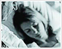

首页 | 常见疾病
-
梅尼埃病的治疗方法
梅尼埃病是以膜迷路积水的一种内耳疾病。梅尼埃病以突发性眩晕、耳鸣、耳聋或眼球震颤为主要临床表现，眩晕有明显的发作期和间歇期。[详细]
-
良性阵发性位置性眩晕的治疗方法
良性阵发性与未知性眩晕发病率很高，要占全部眩晕病的三分之一,普通人群,年发病率0.6%。二是通过手法复位治疗达到良好的疗效，但是，手法复位难以标准化，是一种粗糙的复位方法。[详细]
-
什么是偏头痛伴眩晕
偏头痛伴眩晕是最常见的临床症状，头痛一般指头颅上半部(眉弓、耳廓上部、枕外隆突连线以上)的疼痛，面部、下颌等的疼痛不属于头痛的范围。[详细]
-
前庭神经元炎的治疗方法
治疗前庭神经元炎的方法，一直都是广大患者一直追求的，所以武警总医院中美眩晕病研究所针对前庭神经元炎的治疗方法做以下分析[详细]
-
什么是前庭阵发症
前庭阵发症表现为反复的短暂头晕发作，持续数秒-分钟常伴有平衡障碍步态或姿势不稳及恶心呕吐。眩晕常于静息时发作，亦可于转头、转身时发作。发作频率不等。[详细]
-
颈源性眩晕的病因
-
什么是后循环缺血性眩晕
什么是后循环缺血眩晕？指后循环的TIA和脑梗死。其同义词包括椎基底动脉系统缺血、后循环的TIA与脑梗死、椎基底动脉疾病、椎基底动脉血栓栓塞性疾病。[详细]
-

Dandy综合症的病因有哪些
Dandy综合症是眩晕中不常见的，但是Dandy综合症的危害却是非常大的，下面针对Dandy综合症的病因来展开对Dandy综合症的介绍。[详细]
-
突聋伴眩晕的预防